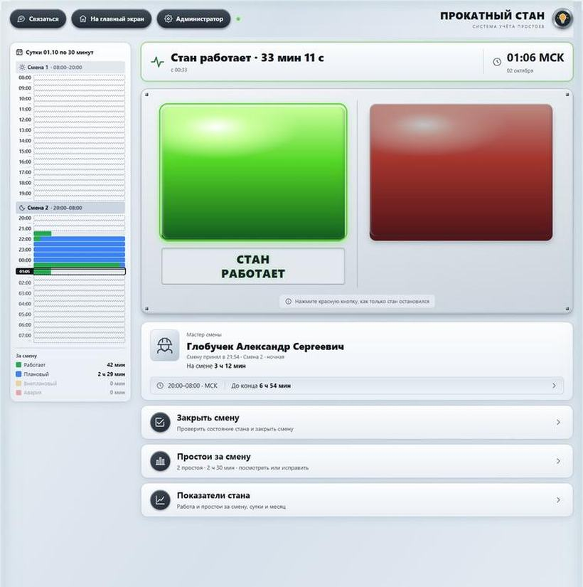
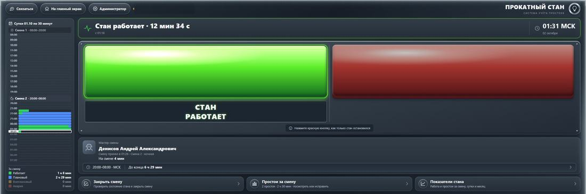
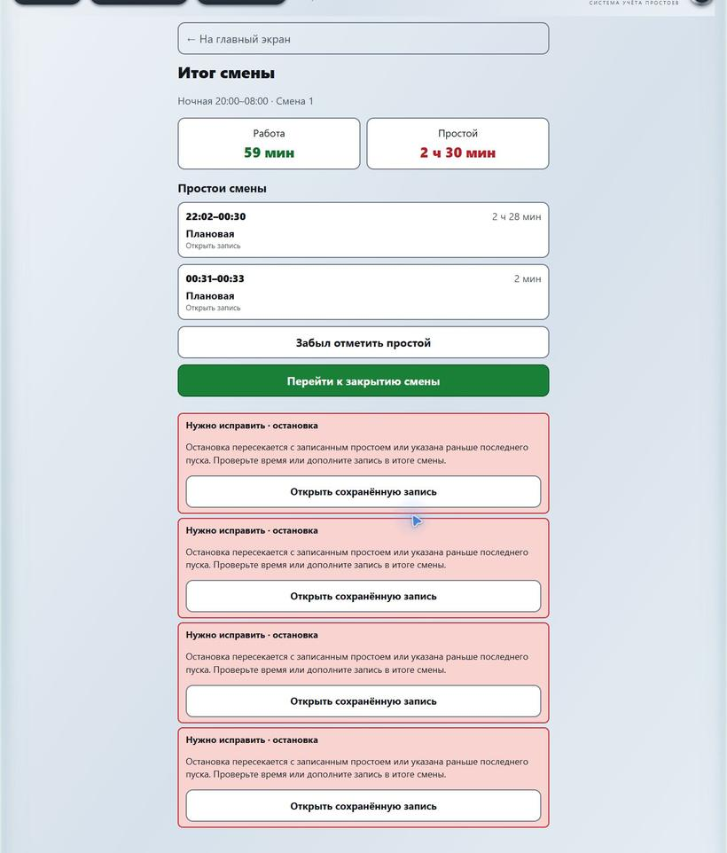
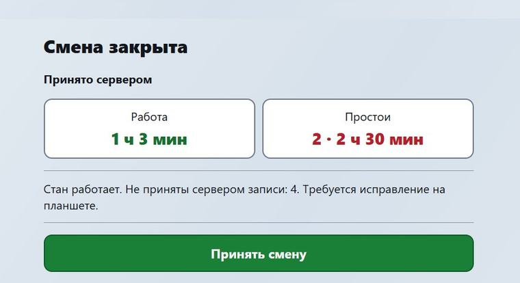
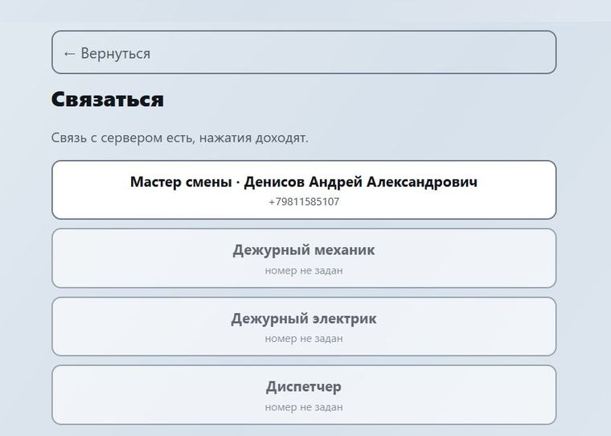
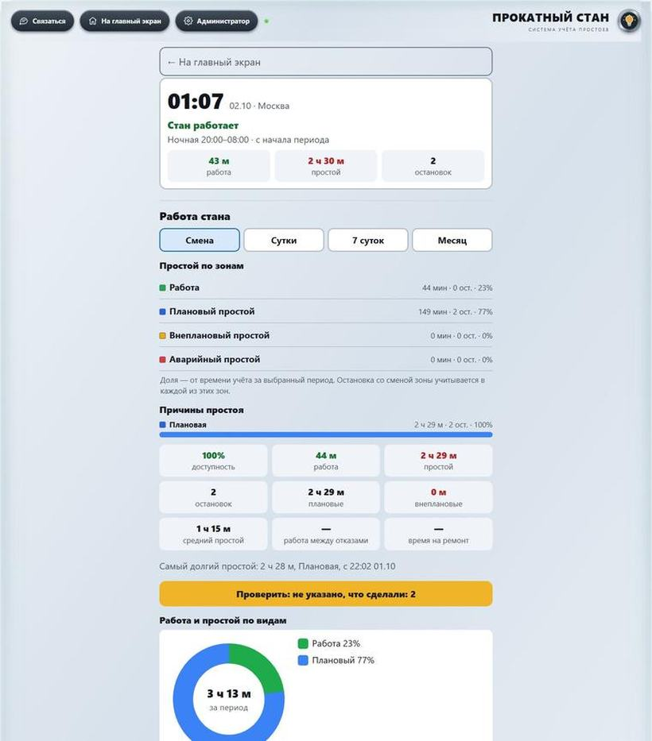
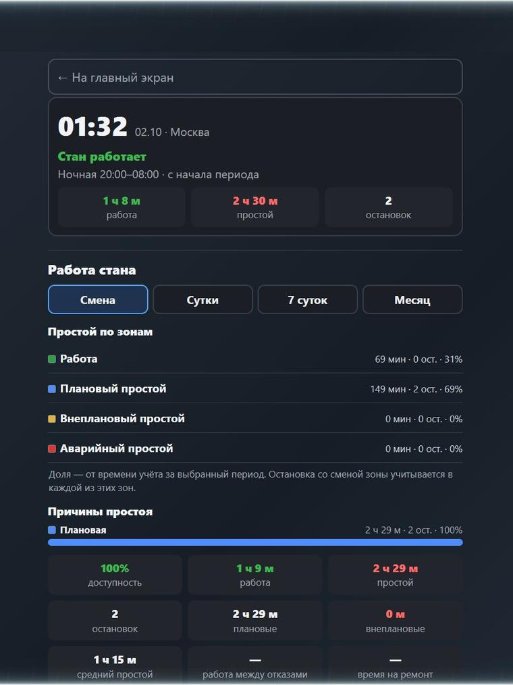
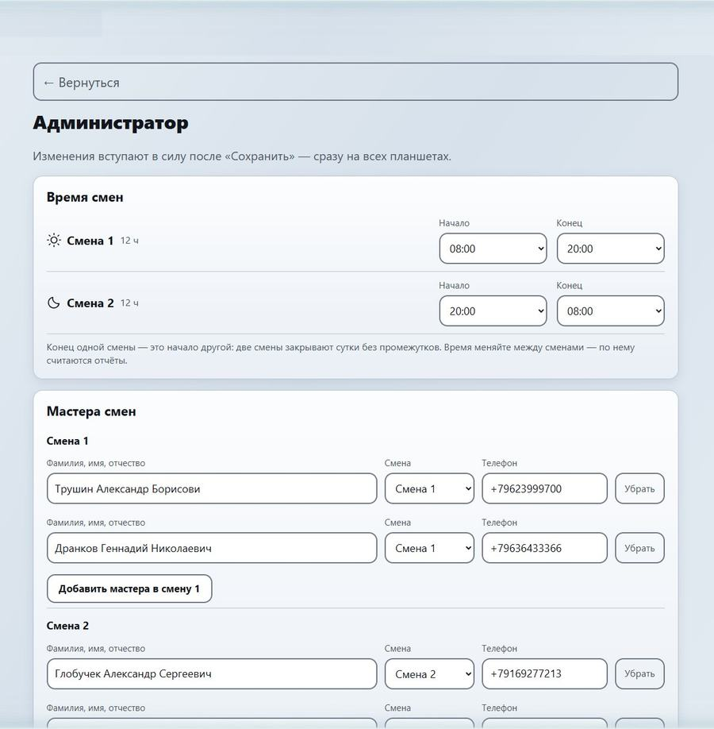

Каждая остановка стана — со временем, причиной и ответственным. Без бумаг и форм. Система уже работает и готова к пилоту.
Презентация для собственника · 01.10.2026
Время вводили по памяти, вес заготовки — до килограмма, прокат — вручную. Форму делали для контролёра, а не для рабочего у стана.
Какие остановки съедают больше всего часов — неизвестно. Не на что направить ремонт и деньги.
Кто быстро запускает стан после отказа — видно только со слов, без фактов.
Час простоя — это недовыпуск. Но сколько таких часов за месяц, никто точно не скажет.
Стоимость часа простоя стана: [__ ₽/час] — подставим данные завода.
Время, смену, сутки и прокат человек больше не вводит — система знает их сама.
Красная кнопка. Время остановки — автоматически.
Плановая, бурёжка или аварийная — и пара слов.
Зелёная кнопка и «что сделали» — по желанию.
Шкала, сводки смены и показатели — сразу.
📡 Нет связи — нажатия сохраняются на планшете и уходят на сервер сами, когда связь появится.


Скриншоты работающего приложения · stan.zmk-project.ru
Тема переключается одним нажатием — комфортно и днём, и ночью.
Крупно и ярко — попадёшь даже в перчатках, без мелких полей.
Не список из 21 кода, а три понятные группы.
Часы, смену и сутки система знает сама — вводить не нужно.
Не нажал вовремя? Простой добавляется задним числом с поправкой времени.
Нажатия хранятся на планшете и уходят сами, когда сеть появится.
Обучение — десять минут: показал один раз — человек работает.
Чем проще рабочему — тем честнее данные у вас.


Если у остановки не заполнено «что сделали» — система сама это подсвечивает, пока не исправят.
Главная потеря периода всегда на виду — понятно, с чего начинать разбор.
Незакрытый простой висит на экране, пока его не закроют — забыть нельзя.
Доли по причинам и зонам, работа между отказами, время ремонта — всё считается само и одинаково для всех смен.
Данные приходят уже проверенными — контролёру не нужно вычислять, что забыли записать.



Доступность, время между отказами, время ремонта и простой по причинам — за смену, сутки, 7 суток и месяц. В любой теме.

за смену, сутки, 7 суток и месяц
сколько стан работает без остановок
среднее время восстановления
и по сменам — кто и что
Нажатия хранятся на планшете и отправляются сами.
База — на собственном компьютере, а не в чужом облаке.
Посторонний без ключа устройства данных не увидит.
Монитор, планшет, телефон; светлая и тёмная тема.
Время смен, мастера и телефоны меняет администратор.
Расчёты смен и простоев проверяются автоматически.
| Было | Стало | |
|---|---|---|
| Время простоя | по памяти, в конце смены | ставит система в момент нажатия |
| Ввод на остановку | 7–10 полей формы | кнопка, плитка, пара слов |
| Причины | список из 21 кода | три понятные группы |
| Ответственный | не известен | смена и ФИО мастера |
| Итоги смены | сводят вручную | готовы сразу, на экране |
| Показатели стана | не считаются | доступность, отказы, ремонт |
Возвращённые часы покажет сама система: первый месяц даёт точку отсчёта по доступности, дальше видно, на сколько её подняли. Цифры в скобках — данные завода.
stan.zmk-project.ru — общий для всех устройств
с причинами, временем и ответственными
за смену, сутки и месяц
по ФИО мастера
смены, мастера, телефоны — без программиста
для показа без доступа к данным
Сейчас идёт тестирование: ключи доступа упрощены. Перед запуском на заводе заменим их на сложные.
одна бригада, отладка по отзывам
копия данных в Google Таблицу для отчётов
пункт «Простой стана» в меню портала
регламент, отметки контролёра
стан сам сообщает, работает ли он
постоянное место для системы
Сроки этапов: [__] — определим после пилота.
бригада и срок — [__]
у поста управления стана
постоянное, вместо домашнего компьютера
тонн в час и рублей с тонны
Через месяц пилота — первые цифры доступности стана и главных причин простоя.
Система готова. Рабочему нужно нажать две кнопки. Вам — дать бригаду, планшет и один месяц.